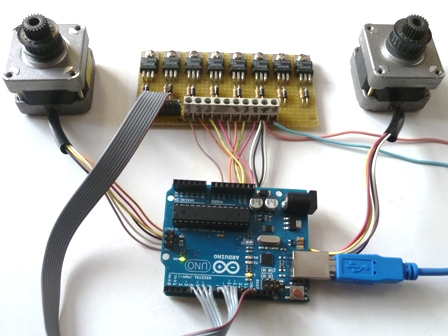

Dopo un po' che ci giocherello, il microcontrollore Arduino comincia a dare i primi frutti.
Intanto ho capito quegli accidenti di punti e virgole e parentesi graffe del linguaggio C che subito mi avevano preso in contropiede, e questa è già una bella cosa.
Poi mi sono procurato due bei motorini passo-passo (stepper) per vedere se riuscivo a farli girare come volevo io, ovvero a totale piacimento di un programmatore ancora molto in erba.
Non solo ho visto che ci si riesce abbastanza facilmente ma che è anche molto divertente!
Come il solito rimando a Google per le informazioni approfondite su questo geniale tipo di motori "robotici", oggi usatissimi in tutti i servomeccanismi (esempio tipico nelle stampanti).
Quelli di cui parlo compiono un giro in 200 passi, quindi si muovono con la risoluzione di 360/200=1,8 gradi, indifferentemente sia in avanti che indietro e con velocità anche minime.
Esistono motori bipolari (a 4 fili di comando) e unipolari (a 5 o 6 fili) e la loro rotazione non avviene applicando una semplice tensione in corrente continua ai morsetti ma girano solo se pilotati con degli impulsi in fase opportuna forniti da specifici circuiti digitali.
Arduino (fra le infinite altre sue possibilità) si presta perfettamente al pilotaggio di questi motori: basta dargli in pasto il giusto software e lui sputa fuori gli impulsi corretti... fasati, dritti, rovesci, lunghi o corti!
C'è solo il problema di amplificare in corrente questi segnali, perchè il piccoletto è in grado di fornire solo 40 mA per ogni porta di uscita, mentre il picco di corrente richiesto per gli avvolgimenti dei motori è molto più elevato.
Vi sono circuiti integrati specifici per questo problema, ma ho voluto risolverlo in maniera semplice ed economica usando dei transistor darlington di potenza (BDX53C) in un circuito semplicissimo, la cui realizzazione si vede in figura su basetta millefori e adatta a due motori.

Ogni transistor (ne servono 4 per motore) è accompagnato da un indispensabile diodo schottky (1N5819) tra collettore ed emettitore per proteggerlo dalle sovratensioni e per regolarizzare il pilotaggio; i transistor non hanno bisogno (per piccoli motori) di dissipatore termico perchè lavorano in saturazione off-on e scaldano pochissimo.
Sulla basetta entrano gli otto fili di comando più i due dell'alimentazione a 5 V per il motore (il negativo è in comune con Arduino) ed escono gli otto fili per gli avvolgimenti (più i quattro comuni positivi in parallelo, essendo in motori usati di tipo unipolare a sei fili).

Ecco il semplicissimo (ultrabanale per gli Arduiniani...) listato che ho scritto per provare la basetta, da caricare su Arduino con il compilatore IDE.
Questo programmino fa girare alternativamente i due motorini in questo modo:
- il primo in maniera del tutto casuale in un senso e nell'altro e in un range tra un minimo di 5 passi (9 gradi) e un massimo di 200 (un giro);
- il secondo in avanti e di un solo passo alla volta (1,8 gradi)
#include
int steps=200;
int pausa=100;
int velocita1=120;
int velocita2=10;
int passiMin=5;
int passiMax=200;
int steps1=0;
int steps2=1;
Stepper motore_1(steps,11,10,9,8);
Stepper motore_2(steps,7,6,5,4);
void setup() {
randomSeed(analogRead(0));
motore_1.setSpeed(velocita1);
motore_2.setSpeed(velocita2);
}
void loop() {
int casual_1=random(passiMin,passiMax);
motore_1.step(casual_1);
delay(pausa);
motore_2.step(steps2);
delay(pausa);
motore_1.step(-casual_1);
delay(pausa);
}
E' un piacere vedere come i motorini rispondono ai parametri forniti via software... e insistendo a guardarli nelle loro evoluzioni c'è solo il rischio di rimanere ipnotizzati.
E vien voglia di cambiare solo un paio di numeri nel listato per veder stravolta tutta la sequenza. In pratica si fa fare al giocattolino quello che si vuole.